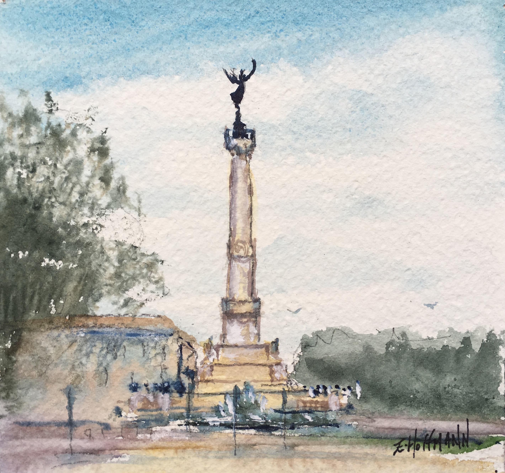
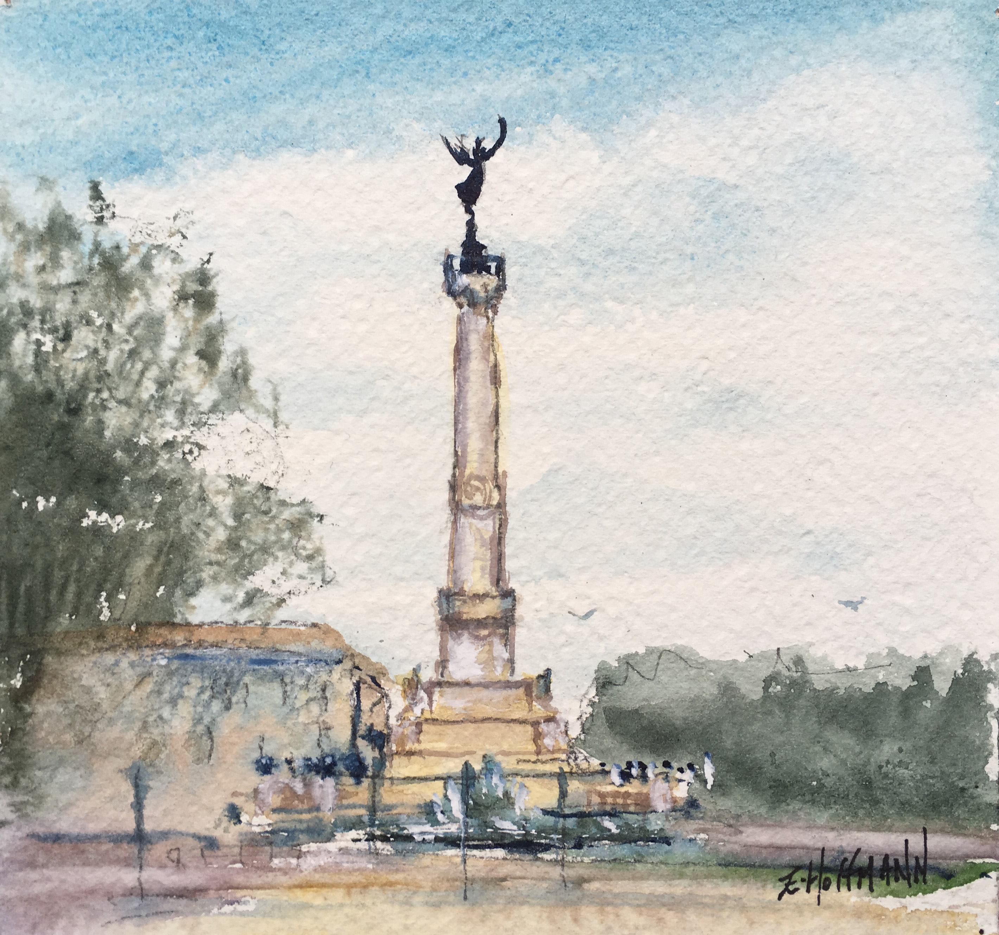
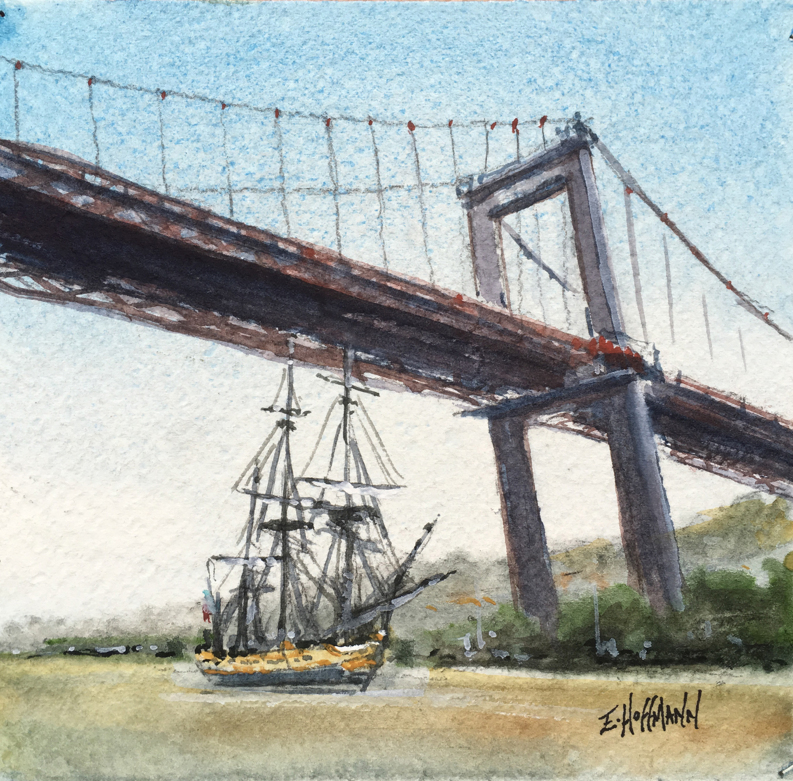
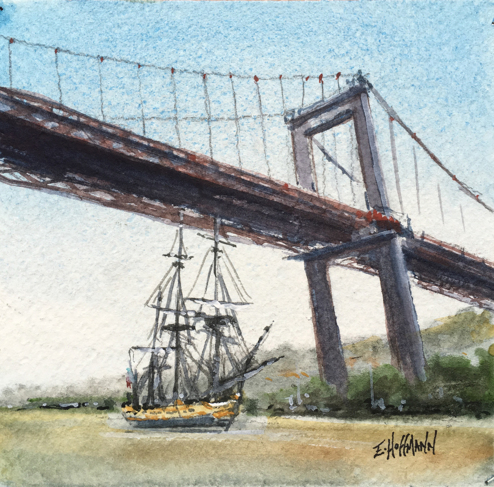

Elisabeth Hoffmann Watercolorist
Artist painter from Bordeaux settled in the middle of the vineyards,
but thanks to her exhibitions, Elisabeth Hoffmann travels a lot, in France and beyond.
The rewards which mark her career testify, if it is necessary,
of the success that her productions meet with an increasingly large and international public.
His paintings breathe serenity and sincerity.
His inspirations, the vineyard, the bassin of Arcachon, Bordeaux or St Emilion.
Let live vivid colors or melted thanks to the delicate touch of the watercolor.
Elisabeth has at heart to express the foundations of a fluid painting
where a few right touches are enough to express the essential.

My last project
 

 
